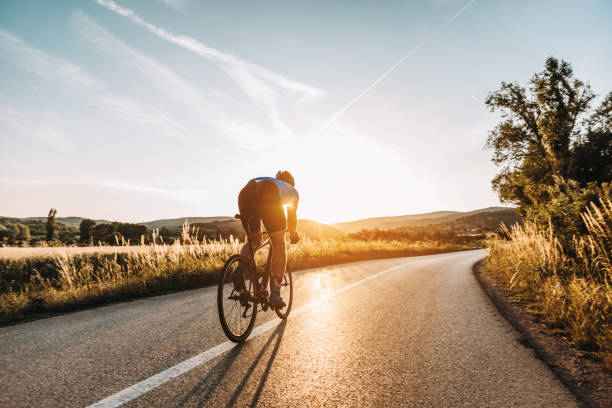

Text Color
RedOrange
Yellow
Green
Blue
Purple
Background Color
RedOrange
Yellow
Green
Blue
Purple
Interests
On the other hand, cycling, a sport deeply rooted in human history, offers a unique blend of endurance, speed, and freedom. Whether navigating winding mountain trails or speeding along urban streets, cyclists experience the thrill of pushing their limits and exploring new horizons. From leisurely rides through picturesque landscapes to grueling races that test the limits of human endurance, cycling caters to individuals of all ages and abilities. Beyond its physical benefits, cycling promotes environmental sustainability, serving as a green alternative to traditional modes of transportation. Moreover, it fosters a sense of community, as cyclists come together to share their passion, exchange tips and tricks, and support one another in their cycling endeavors. Whether for recreation, competition, or simply the joy of the ride, cycling continues to inspire millions around the globe to pedal towards a healthier, more vibrant future.

Basketball, often dubbed as the quintessential team sport, captivates audiences worldwide with its electrifying displays of athleticism, strategic maneuvers, and nail-biting finishes. From the thunderous slam dunks to the precision three-point shots, basketball is a dynamic game that demands not only physical prowess but also mental acuity. Players must possess exceptional agility, coordination, and stamina to outmaneuver opponents and seize scoring opportunities. Beyond the court, basketball fosters camaraderie, discipline, and leadership skills, as teams work together to achieve common goals, learn from victories and defeats, and forge unbreakable bonds.